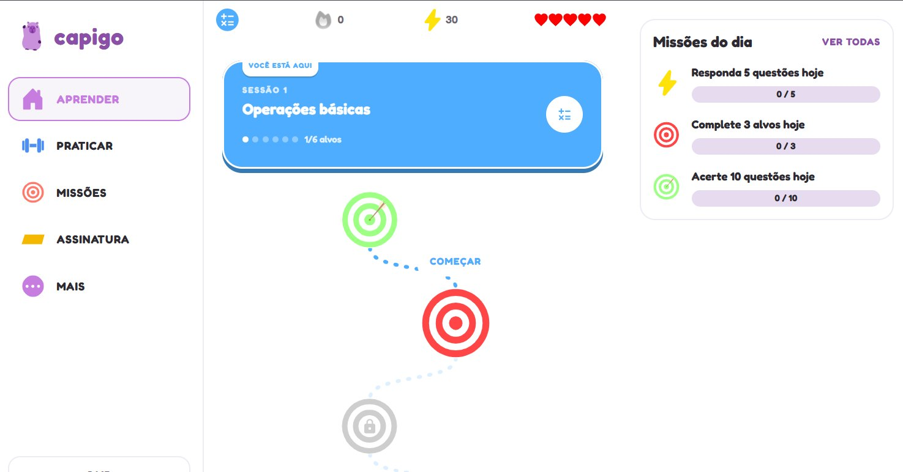
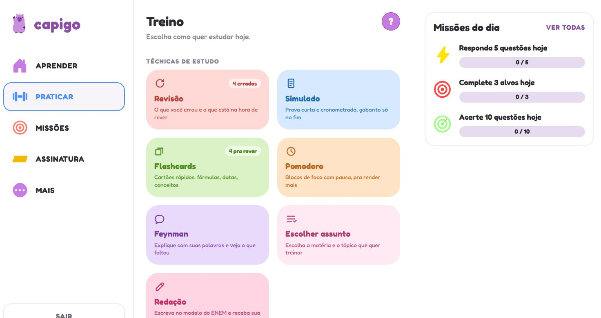

Estude para o ENEM um pouquinho por dia
O CapiGO transforma a preparação para o ENEM em missões curtas, com a capivara do seu lado. Trilhas por matéria, questões das fáceis às do ENEM, revisão do que você errou e correção de redação no estilo da prova.
- 6 matérias
- 157 assuntos
- Redação corrigida com IA
- Android e web

Uma trilha de cada vez
Estudar para o ENEM assusta porque é muita coisa. O CapiGO quebra o conteúdo em sessões pequenas, com alvos para cumprir, e mostra exatamente onde você está e o que vem a seguir.


Também no computador
O CapiGO tem uma versão web com a mesma trilha, as técnicas de estudo e as missões do dia, para estudar numa tela maior quando estiver no computador. É só abrir capigo.appstore7.com.br/app no navegador.


Tudo para chegar pronto na prova
Missões rápidas
Questões de todas as matérias, das fáceis às do nível do ENEM, em blocos curtos que cabem em qualquer pausa do dia.
Revisão inteligente
O app lembra o que você errou e traz de volta na hora certa, para o conteúdo ficar de verdade.
Simulados
Prova cronometrada, com gabarito só no final, para treinar o ritmo e a resistência do dia do exame.
Redação com IA
Correção por competência, no estilo do ENEM, com temas para treinar e opção de enviar a foto do texto escrito à mão.
Técnicas de estudo
Flashcards, método Feynman e cronômetro Pomodoro dentro do próprio app, para revisar do jeito que funciona para você.
Desafios com amigos
Adicione amigos, mande desafios e dispute o ranking da semana, que compara as questões resolvidas e recomeça toda segunda.
Comece em menos de um minuto
Baixe o app
Instale o CapiGO pela Google Play no seu celular Android.
Conte seu objetivo
Responda algumas perguntas rápidas sobre a sua meta e a sua rotina de estudo.
Siga a trilha
Faça as missões do dia, mantenha a ofensiva e veja onde precisa reforçar.
Treine a redação
Escreva sobre um tema, envie e receba a nota por competência com os pontos a melhorar.
Perguntas frequentes sobre o CapiGO
Para quem é o CapiGO?
Para estudantes do ensino médio e para quem vai fazer o ENEM, seja pela primeira vez ou de novo, e quer criar o hábito de estudar todos os dias, mesmo com pouco tempo.
Quais matérias o app cobre?
Matemática, Física, Química, Biologia, Língua Portuguesa e Conhecimentos Gerais, somando 157 assuntos, além do treino de redação.
Como funciona a correção de redação?
Você escreve no app ou tira uma foto do texto feito à mão. A correção usa inteligência artificial e avalia a redação por competência, no mesmo estilo de critérios do ENEM, apontando o que melhorar.
O CapiGO funciona no iPhone ou no computador?
O aplicativo está disponível para Android, pela Google Play. No iPhone ou no computador, dá para usar a versão web do CapiGO pelo navegador.
Como falo com a equipe do CapiGO?
Pela página de contato da AppStore7 ou pelo WhatsApp informado no site do CapiGO.
A prova está chegando. Comece hoje.
Uma missão por dia já faz diferença. Baixe o CapiGO e siga a trilha com a capivara.